Ecran Mention SMR
Analyses PMSI du décret des mentions SMR
Introduction
Le décret n°2022-25 du 11 janvier 2022 relatif aux conditions techniques de fonctionnement de l’activité de SMR, complété par l’instruction DGOS N°DGOS/R4/2022/210 du 28 septembre 2022 relative à la mise en oeuvre de la réforme des autorisations d’activité des soins médicaux et de réadaptation définissent les pré-requis et conditions des futures mentions SMR.
Une partie importante de ces caractéristiques peut être raisonnablement traduite en PMSI SMR afin de permettre aux établissements d’analyser et de travailler sur la cohérence à minima de leurs pratiques de soins, vues du PMSI SMR, avec les exigences des mentions SMR qui leur sont octroyées.
L’attribution des mentions SMR à chaque séjour HC terminé et chaque semaine HP dans PMSISoft est cohérente avec les codes des autorisations actuelles. 1
Ainsi, à chaque mention SMR sont associées :
des pratiques thérapeutiques avec un nombre minimum de pratiques thérapeutiques à proposer à chaque patient, selon son état clinique, parmi une liste fermée de pratiques thérapeutiques spécifique à chaque mention.
Traduction d’une pratique thérapeutique dans PMSISoft : réalisation, au cours du séjour terminé du patient en HC ou au cours d’une semaine en HP, d’au moins 1 acte CSARR par un professionnel (identifié via la variable Type intervenant) correspondant à la pratique thérapeutique. 2
Puis, pour chaque séjour terminé en HC ou chaque semaine en HP, comparaison au seuil minimal de pratiques thérapeutiques attendues pour la mention du séjour HC ou de la semaine HP.des séquences de traitement à dispenser, chaque jour ouvré, à chaque patient, selon son état clinique.
Séquences de traitement possibles : indifférentées, individualisées, collectives, masso-kinésithérapie.
Traduction d’une séquence de traitement dans PMSISoft : pour chaque séjour terminé en HC ou pour chaque semaine en HP, pour chaque jour ouvré, repérage d’au moins une réalisation d’un acte CSARR correspondant aux séquences de traitement possibles.
Puis, pour chaque jour ouvré, comparaison du panier de séquences de traitement minimal attendu pour la mention du séjour en HC ou de la semaine en HP.
3 axes d’analyses :
- Case-mix “Mention + Type d’hospitalisation” = analyse pour chaque couple “Mention + type d’hospitalisation”
- Case-mix “Mention + Intervenant” = analyse pour chaque couple “Mention + configuration de type d’intervenant réellement rencontrée”
- “Séjours et mention” = analyse, pour chaque séjour, avec possibilité de remonter aux informations détaillées des séjours
Toutes les analyses ne concernent que les séjours terminés (HC ou HP) hors erreur de classification (CM 90) dans le périmètre sélectionné par les filtres.
Historique depuis 2019.
Chemin de l’écran
Analyse SMR > Mentions
Filtres
- Année PMSI
- Mois PMSI
- UM
- Autorisations de l’établissement
- Type d’hospitalisation
- Classification des séjours et RHS (CM, GN, GR, GL, GME, sévérité)
Case-mix “Mention + Type d’hospitalisation”
Le case-mix comprend 15 colonnes, correspondant à l’identification des couples “Mention + type hospitalisation” (2 premières colonnes) et à 13 analyses détaillées dans leur ordre de gauche à droite ci-dessous.
Les analyses sont regroupées par famille cohérente.
Export csv et JSON des informations du casemix via les liens Télécharger
Couple mention+type hospitalisation
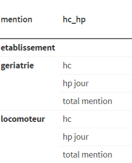
Chaque couple “Mention + type hospitalisation” rencontré via au moins 1 séjour terminé dans le périmètre sélectionné est affiché.
Chaque mention (tout type d’hospitalisation confondu) fait l’objet une ligne d’analyse consolidée, identifiée par l’intitulé “total mention”.
La première ligne “etablissement” est la ligne d’analyse consolidée au niveau de l’établissement. 3
Séjour
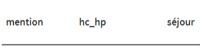
Nombre de séjours terminés correspondant à la ligne analysée (établissement, couple “Mention + type hospitalisation”, mention).
Jour ouvré-venue
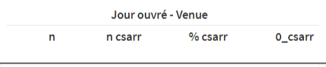
n = nombre de journées de présence en jour ouvré (en HC) ou de venues en jour ouvré (en HP) pour la ligne analysée
n csarr = nombre de journées de présence en jour ouvré (en HC) ou de venues en jour ouvré (en HP) avec au moins 1 acte CSARR réalisé pour la ligne analysée
% csarr = ratio n csarr / n
0_csarr = nombre de journées de présence en jour ouvré (en HC) ou de venues en jour ouvré (en HP) avec aucun acte CSARR réalisé pour la ligne analysée
Réalisation CSARR
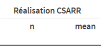
n = nombre total de réalisations d’acte CSARR réalisés dans les JP en jour ouvré (HC) ou dans les venues en jour ouvré (HP)
mean = moyenne de réalisations des actes CSARR par JP en jour ouvré (HC) ou par venue en jour ouvré (HP)
Intervenant
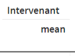
mean = moyenne, pour les séjours de la ligne analysée, du nombre de type d’intervenant différent ayant réalisé au moins 1 acte CSARR dans un jour ouvré
On peut traduire ce calcul par la phrase “Chaque jour ouvré des séjours relevant du couple”Mention + type hospitalisation” de la ligne analysée a eu mean type d’intervenant différent en moyenne.”
Pratique thérapeutique
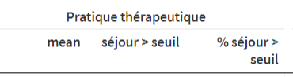
mean = moyenne, pour les séjours de la ligne analysée, du nombre de pratiques thérapeutiques (vues du PMSI - voir Introduction) de la mention de la ligne
séjour > seuil = nombre de séjours avec un nombre de pratiques thérapeutiques de la mention de la ligne > au nombre minimal attendu de pratiques thérapeutiques de la mention de la ligne
% séjour > seuil = ratio du nombre de séjours “séjour > seuil” par rapport au nombre de séjours de la ligne analysée
Séquence de traitement
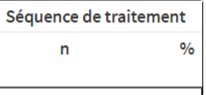
n = nombre de JP en jour ouvré (HC) ou de venues en jour ouvré (HP) pour lesquelles le panier de séquences de traitement réalisées est > au minimum attendu, par jour ouvré, pour le panier de séquences de traitement de la mention de la ligne
% = ratio entre le nombre de la colonne précédente et le nombre de JP en jour ouvré (HC) ou de venues en jour ouvré (HP) de la ligne analysée
Case-mix “Mention + Intervenant”
Le case-mix comprend 16 colonnes, correspondant à l’identification des couples “Mention + intervenant” (2 premières colonnes) et 14 analyses détaillées dans leur ordre de gauche à droite ci-dessous.
Pour chaque mention, PMSISoft identifie toutes les configurations de types d’intervenant rencontrées 4 dans les séjours terminés où une configuration de types d’intervenant = une liste unique des différents types d’intervenants ayant codé au moins 1 fois un acte CSARR dans le séjour, à l’exclusion de tous les autres types d’intervenant.
Exemple : “Locomoteur + (mk, ergo, psychologue)” = l’ensemble des séjours terminés de la mention “Locomoteur” où seuls les 3 types d’intervenant (mk, ergo, psychologue) sont intervenus à l’exclusion de tous les autres types d’intervenant.
Chaque couple “mention + type d’intervenant” rencontré est affiché.
La première ligne “etablissement” est la ligne d’analyse consolidée au niveau de l’établissement.
Les analyses sont regroupées par famille cohérente.
Export csv et JSON des informations du casemix via les liens Télécharger
Remarque : ce casemix est aussi intéressant, indépendamment du sujet des mentions SMR, pour analyser toutes les configurations rencontrées d’intervenants par séjour dans l’établissement.
Couple mention+intervenant
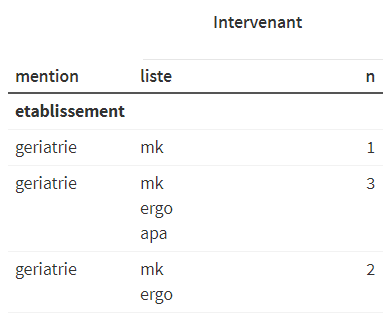
n = nombre de types d’intervenants concernés par le couple de la ligne analysée.
Séjour
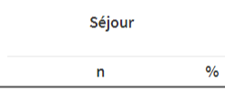
n = nombre de séjours avec la configuration “Mention + types d’intervenant” de la ligne
% = ratio entre la colonne précédente et le nombre de séjours de la mention de la ligne
Jour ouvré-venue
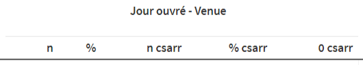
n = nombre de journées de présence en jour ouvré (en HC) ou de venues en jour ouvré (en HP) pour la ligne analysée
% = ratio entre la colonne précédente et le nombre de journées de présence en jour ouvré (en HC) ou de venues en jour ouvré (en HP) de la mention de la ligne
n csarr = nombre de journées de présence en jour ouvré (en HC) ou de venues en jour ouvré (en HP) avec au moins 1 acte CSARR réalisé pour la ligne analysée
% csarr = ratio n csarr / n
0_csarr = nombre de journées de présence en jour ouvré (en HC) ou de venues en jour ouvré (en HP) avec aucun acte CSARR réalisé pour la ligne analysée
Réalisation CSARR
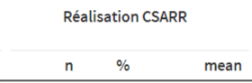
n = nombre total de réalisations d’acte CSARR réalisées dans les JP en jour ouvré (HC) ou dans les venues en jour ouvré (HP)
% = ratio entre la colonne précédente et le nombre de réalisations CSARR des journées de présence en jour ouvré (en HC) ou des venues en jour ouvré (en HP) de la mention de la ligne
mean = moyenne des réalisations des actes CSARR par JP en jour ouvré (HC) ou par venue en jour ouvré (HP)
Pratique thérapeutique
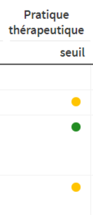
seuil = le nombre de types d’intervenant de la ligne éligibles aux pratiques thérapeutiques de la mention de la ligne est < au seuil minimal de pratiques thérapeutiques attendues pour la mention (pastille orange) ou >= à ce seuil minimal (pastille verte)
Remarque : le nombre de types d’intervenant éligibles aux pratiques thérapeutiques de la mention peut être différent du nombre total de types d’intervenant total (cf intervenant non éligible)
Séquence de traitement
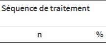
n = nombre de JP en jour ouvré (HC) ou de venues en jour ouvré (HP) pour lesquelles le panier de séquences de traitement réalisées est > au minimum attendu, par jour ouvré, pour le panier de séquences de traitement de la mention de la ligne
% = ratio entre le nombre de la colonne précédente et le nombre de JP en jour ouvré (HC) ou de venues en jour ouvré (HP) de la ligne analysée
Séjour et mention
Chaque séjour terminé du périmètre sélectionné est analysé avec les calculs des 2 casemix de l’écran.
Chaque séjour est identifié par son nas (1ere colonne). En sélectionnant une ligne (donc un séjour), accès automatique à la liste des RHS du séjour et aux informations détaillées du séjour.
Export csv et JSON de la liste des séjours via les liens Télécharger
Prenons un exemple fictif pour illustrer :
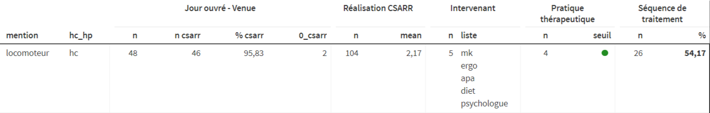
Ce séjour HC relève de la mention “Locomoteur”.
Ce séjour a 48 journées de présence (au sens PMSI SMR) en jour ouvré, dont 46 avec au moins 1 acte CSARR réalisé (ce qui représente 95,83% des jours de présence en jour ouvré) et 2 avec 0 acte CSARR codé.
Ce séjour a 104 réalisations CSARR cumulées en jour ouvré, ce qui correspond à une moyenne de réalisations CSARR par jour ouvré de 2,17
5 types d’intervenants différents (mk, ergo, apa, diet, psychologue) ont réalisés au moins 1 acte CSARR dans ce séjour.
Parmi ces 5 types d’intervenants, 4 sont pris en compte dans le calcul des pratiques thérapeutiques en “Locomoteur” (mk, ergo,apa,psychologue).
Le seuil minimal de pratiques thérapeutiques en mention “Locomoteur” étant fixé à 3, le séjour est indiqué avec un seuil OK (vert).
Le nombre de journées de présence en jour ouvré pour lesquelles le nombre minimal de séquences de traitement attendu en mention “Locomoteur” (à savoir “deux séquences de traitement dont au moins une séquence de soins individualisés”) est 26, soit 54,17% des jours de présence en jour ouvré du séjour.
Demande d’accès Standard
Pour demander un accès Standard à PMSISoft SSR pour votre établissement, nous contacter (en sélectionnant l’option “Demande accès PMSISoft Standard”)
Notes de bas de page
la mention “Pédiatrie” est attribuée à tous séjours HC ou semaine HP d’un patient de moins de 18 ans↩︎
le cas particulier de la pratique thérapeutique “Education thérapeutique” est repérée par au moins 1 codage CSARR du sous-chapitre CSARR 10.01 “Actes d’éducation, dans le cadre d’un programme d’éducation thérapeutique”↩︎
l’analyse de la ligne “etablissement” est dédoublonnée (exemple : un séjour HP avec 2 mentions représentées ne compte que pour un dans l’analyse “etablissement”). Le nombre de séjours de la ligne “etablissement” correspond donc au nombre de séjours terminés hors CM 90 de la sélection.↩︎
le cas particulier de la pratique thérapeutique “Education thérapeutique” est repérée par au moins 1 codage CSARR du sous-chapitre CSARR 10.01 “Actes d’éducation, dans le cadre d’un programme d’éducation thérapeutique”↩︎